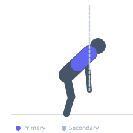

Exercise guide / Band Pull-Apart
Band Pull-Apart
The band pull-apart is a simple but highly effective prehabilitation exercise for the posterior shoulder and upper back. Holding a resistance band at arm's length, the exerciser pulls the band apart horizontally until it touches the chest, training the posterior deltoid, rhomboids, and middle trapezius. It is widely used as a warm-up drill, corrective exercise, and high-rep accessory movement for shoulder health.
Primary muscles
deltoid posterior
rhomboid major
trapezius middle
Secondary muscles
rhomboid minor
teres minor
infraspinatus
Stabilizers
trapezius lower
Equipment
Resistance Band (Loop / Mini Band)
Optional
Resistance Band (Tube with Handles)


Starting position
- Stand upright holding a resistance band at both ends with both arms extended straight in front of the body at approximately shoulder height. Palms face the floor. Hands are slightly wider than shoulder-width.
Setup
- Choose a resistance band light enough to maintain good form for high reps. Choke up on a heavier band to increase resistance, or use a lighter band for more range.
Steps
- Step 1: Hold the band with both hands at shoulder height, arms extended in front.
- Step 2: Keeping the arms straight (slight elbow bend allowed), exhale and pull the band apart by moving both hands outward and back.
- Step 3: Continue until the band touches the chest, squeezing the rear delts and rhomboids at peak contraction.
- Step 4: Inhale and slowly return the hands to the starting extended position.
Coaching cues
- Lead with your elbows behind you as you pull the band apart
- Think about bending the band around your chest — not just pulling the ends apart
Breathing
- Exhale as you pull apart; inhale as you return.
Range of motion
- Pull until the band touches or nearly touches the sternum; return to fully extended arms.
Tempo
- 2-1-2-0
Common mistakes
- Bending the elbows heavily during the pull, which reduces the targeted muscles' load
- Internally rotating the shoulders — keep thumbs slightly elevated (external rotation)
Safety
- Select band resistance you can control — do not let the band snap back
Training
- endurance: 15–30 reps
- endurance: 3–5 sets
- Rest: {'endurance': 30}